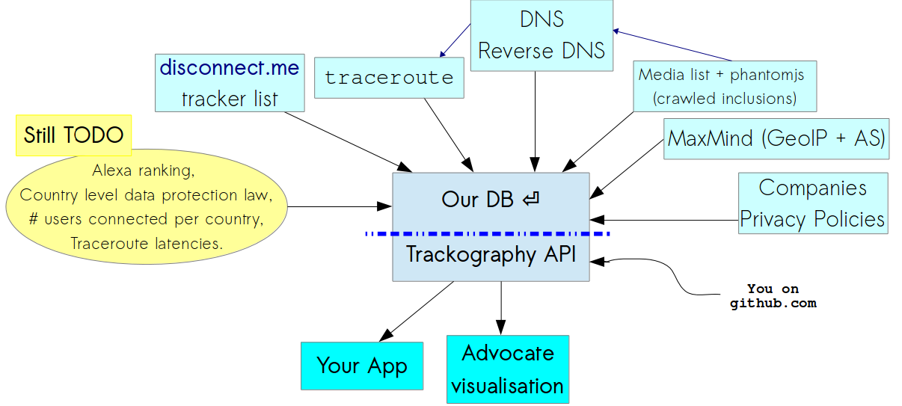

Trackography
Geopolitical analysis on the current networks flow.
press ESC to display slide tree Video of our CCC presentation (end of December 2014) .
/me
Name: Claudio Agosti - vecna@globaleaks.org
Backstory: hacking, security research, privacy architect, software development (when I started I still got hairs!)
key value: dedicated on humans instead of computers.
Other stuff: Core team of GlobaLeaks project and Hermes Center; working on Tactical Tech.
Slides are in English because they are kept online.Technical requirements
Spot the differences
Third party content can be filtered out
On one side are the ad blockers. More than 140m people, or 5 per cent of the world’s online population, are estimated to use software such as Adblock Edge and Adblock Plus to prevent advertising from appearing on web pagesTouching others business cause always poor reactions: is ad block theft ?.
Load external content, means connections performed to other services
- Foreign network infrastructure are used to reach them
- Company you never heard about are part of your navigation

AdBlock+, Ghostery, Disconnect
Currently some add-ons for the browsers had reach a certain popularity
- They block connection to recognized advertising company
- The advertising company are, in fact, "tracking companies"
Political requirement
Online tracking
“When governments collect data we call it surveillance, but when companies do the same, we mistakenly call it user services”Marek Tuszynski.
NSA abuses
Internet Origianl Sin
The fiasco I want to talk about is the World Wide Web, specifically, the advertising-supported, “free as in beer” constellation of social networks, services, and content that represents so much of the present day web industry.by Ethan Zuckerman.
Load external content, means connections performed to other services
- Foreign network infrastructure are used to reach them
- Company you never heard about are part of your navigation
AdBlock+, Ghostery, Disconnect
Currently some add-ons for the browsers had reach a certain popularity
- They block connection to recognized advertising company
- The advertising company are, in fact, "tracking companies"
- Media organisation has start to attack them
- The market leader has start to "compromise" with a whistelist model.
Is that a problem ?
NO!*
* considering the Data protection directive.Personal Data Protection Glossary
Data Protection and Privacy Glossary- Personal DataAny information concerning natural persons that are or can be identified also by way of other items of information – e.g., via a number or an ID code . For instance, personal data is one's first or last name, address, Tax ID as well as a picture, the recording of one's voice or one's fingerprint, or medical, accounting or financial information relating to that person.
- sensitive dataA personal data requiring special precautions on account of its nature. A sensitive data is any data that can disclose a person's racial origin or ethnicity, religious or other beliefs, political opinions, membership of parties, trade unions and/or associations, health, or sex life.
- Data Subject's RightsUnder Italy's Personal Data Protection Code, every Data Subject has various rights in connection with the processing of their personal data (see Section 7) [...]
my thesis
Current data protection approach is outdated, and is focused on personal rights, when we have to address society rights.
Theoretical issue:
These are anonymous data, apparently they have no meaning
Which data a third party had ?
- Cookie: The simplest one
- Browser identifier technologies: Panoptclick + Client Identification Mechanism.
- Content of the page you are reading: specially if the service is also a web crawler, or behind the scene, has some agreement with one of them.
- Geographical location: based on the IP address associated.
- Your source: In certain associated (VICE on tracking + VICE on porn).
- Your profile: only if has the profile (Facebook ?), or if cooperate with someone collecting profile and reselling them.
Concerns
The single person can be pretty meaningless in the big picture..
Numbers talks
and medatada are more truthful than disclosed data
A very limited list of research
- Bruce Schneier Why Anonymous data sometime isn't.
- Toward Collective Behavior Prediction via Social Dimension Extraction
- Predicting Age and Gender in Online Social Networks
- Web page clustering using a self-organizing map of user navigation patterns
- Modeling and Predicting Behavioral Dynamics on the Web
- Mining web data to create online navigation recommendations
Why did we develop Trackography?
Due to the abstract nature of the tracking, surveillance and profiling: is essential provide numbers and data to non technical audience.
In details, we aim to
- Make transpanrecy in the online tracking business, because it is pretty opaque
- Increare safety for users (in this case, more for societies) enlightened by Snowden revelations
- We do not control the profiles created about us by online tracking companies - which can lead to abuse
- This is a resource for research, advocacy and transparency
- Making every data accessible (API) and test replicable (look on github - our repository).
The analysis subject
Different kind of subject means different interpretation of the results
- Health care, online clinics: very sensitive, more in place where insurance is private.
- Public sector: relationship between citizen and state "sold" or "leaked" to foreign.
- Media: the interest expressed by reader reflect the general interest of the population.
We are dedicated on the last!
Why are we focusing on media websites?
- One of the most common things we do is read the news online
- The business model of the media is largely dependent on advertising
- The type of news we read show more about us in the long-term than what we think
- A Facebook experiment shows that what we read influences our behaviour
Developing a Script to Track the Trackers
Our script is designed to:
- Emulate a browser that connect to a media website
- Records all the third party URLs included automatically from the media.
- Perform a traceroute for every URL included in the media websites under analysis
- Identify the countries which host the network infrastructure and perform a GeoIP conversion of all the included IP addresses in the network path
But the script does NOT work in conjunction with your browser - it just performs a connection to the media and sends us the results
The Map
- The blue countries host the servers of the websites you have selected
- The purple countries host the network infrastructure required to access the websites you have selected
- The red countries host the servers of the companies that track you when you access the websites you have selected
As for the arcs?
- The blue arcs show your connection to the websites you have selected
- ...while the red arcs show your connection to tracking companies
User Vulnerability: Network Topology
- When we access websites, our connections travel through the network infrastructure of foreign states
- When unencrypted connections pass though the network infrastructure of ISPs, they have access to the HTTP referer, cookies, and other identifiable information
- When unencrypted connections pass though the network infrastructure of ISPs, they can redirect traffic to malicious servers
Did you remember ?

China greatcannon ?

Is the same concept of NSA QUANTUM.
And associated propaganda: The Wall Street Journal suggests Snowden gave China an incredibly powerful cyberweapon .or FoxAcid ?

Or FinFly ISP?
They are based on the interception of HTTP connections which are redirected to other servers and subsequently injected with a browser exploit or tampered with a download on-the-fly
Tapping fibre-optic cables
 And check Ingrid Burrington interactive map!
And check Ingrid Burrington interactive map!
Geopolitics of data
User Profiling
When we access webpages, third parties track us and create profiles about us - which may or may not be accurate
Google ?
- April 2015 Statement of Objections.
- From Italian Data Protection Authority: Google to comply with the privacy measures set for th by the Italian DPA.
Trackers' Business Model
Third party trackers (a.k.a tracking companies) engage in (one or more of) the following:
- Advertising
- Profiling
- Market Research
- Web Analytics
- Web Crawling
"Our policy is to tell people about government requests for their data, except in limited cases, like when we are gagged by a court order, which sadly happens quite frequently" - Google spokesperson
But how do the Trackers handle our data?
We collected the following fields of data from the privacy policies of some of the globally prevailing tracking companies:
- The types of data they collect
- Whether they provide safeguards to prevent the full identification of users' IP addresses
- Whether users can opt-out from their tracking
- Whether they support Do Not Track (DNT)
- The types of tracking technologies they use
- Whether they comply with the US – EU Safe Harbour Framework
- Whether they are TRUSTe certified
Opt-Out ?
Largely conditional because in some cases:
- Users can only opt-out if their browser is not configured to block third party cookies
- Users can only opt-out by cancelling their account with a service
- Users need to opt-out from every device that they use
- Users can only opt-out from the browser that they are using
- If users opt-out they will have restricted access to content, features and services
- ...and lets not forget the various default online tracking settings browsers have...
Trackography API
How can we block and circumvent online tracking?
| Types of tools | Tools for Firefox | Tools for Chrome |
| Blocks third party trackers | Privacy Badger, AdBlock Plus, Ghostery and Disconnect | Adblock Plus, Ghostery and Disconnect |
| Blocks third party scripts | NoScript | ScriptNo |
| Blocks cross-site tracking | RequestPolicy and Priv8 | |
| Sets opt-out cookies | Beef Taco | |
| Clears your browsing history | Click&Clean | Click&Clean |
| Visualises third party trackers | Ghostery and Disconnect | Ghostery and Disconnect |
Help us Track the Trackers
Is your country missing from Trackography?
Contribute by helping us create or review your country's media list and please pull request.
When the media list is ready, run the data collection script
wget https://github.com/vecna/trackmap/blob/master/setup.sh && sh ./setup.sh
cd trackmap
./perform_analysis.py -c NAME_OF_YOUR_COUNTRY
Thanks! Questions?
pub 3200R/0x94E7EF47 2014-08-05 [expires: 2015-08-30]
Key fingerprint = ABC2 7639 5EE3 3245 A0A1 3973 40E2 6C25 94E7 EF47
uid TrackMap project <trackmap@tacticaltech.org>
sub 3200R/0x504DEBDF 2014-08-05 [expires: 2015-08-30]
Trackography twitter @trackography_
Access Trackography through Tactical Tech's Me & My Shadow